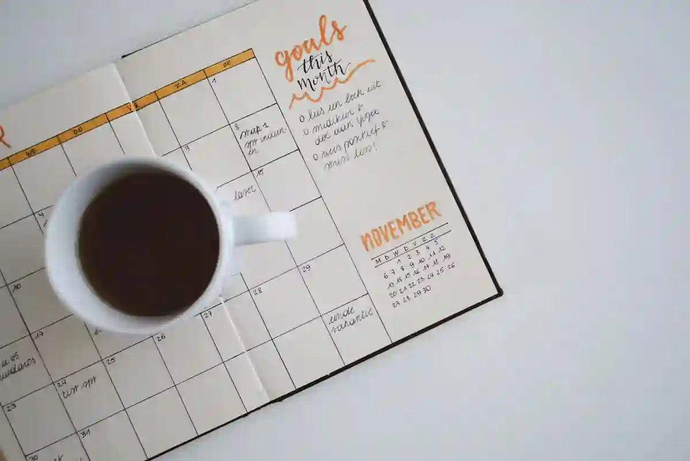

E Crear una membresía o comunidad de pago es uno de los modelos de negocio más sostenibles para generar ingresos recurrentes, escalar tu facturación y monetizar un conocimiento específico.
En este artículo descubrirás 12 ideas de membresías rentables que puedes analizar al detalle según su viabilidad y tus circunstancias. Están estructuradas según su formato, nivel de complejidad y potencial de ingresos.
Nota editorial: Estas ideas no representan promesas de dinero fácil ni de ganancias inmediatas. Cada negocio requiere conocimientos especializados, planificación y evaluación de su viabilidad. Toda inversión implica riesgos, incluida la posibilidad de sufrir pérdidas.
Estas son 12 ideas de membresías poco comunes en el sector digital y empresarial.
En el sector digital
1. Membresía digital de precios, costos y rentabilidad
Esta brillante idea consiste en crear una plataforma online con calculadoras de precios, herramientas para determinar márgenes de ganancia y plantillas para controlar costos, comisiones y gastos operativos.
Los suscriptores pagan una tarifa recurrente para utilizar recursos adaptados a comercios físicos, restaurantes y vendedores de e-commerce. Puedes iniciar con una web básica y hojas de cálculo especializadas para luego evolucionar hacia un software en la nube.
Biblioteca de herramientas de gestión para emprendedores: Este modelo ofrece un área privada con plantillas descargables de presupuestos, cotizaciones, control de inventario y flujo de caja.
Los usuarios acceden a nuevos recursos descargables cada mes mediante una suscripción, aunque también puedes comercializar paquetes individuales como producto gancho antes de convertirlos en miembros recurrentes.
Para que una membresía digital sea sostenible necesitas tráfico constante, retención de suscriptores, tecnología funcional, contenido actualizado y una oferta validada. Los dos principales obstáculos son la alta tasa de cancelación (churn) y el tiempo necesario para construir una audiencia inicial.
2. Membresía de plantillas y recursos para pequeños negocios
Consiste en ofrecer una biblioteca privada con plantillas editables de diseño, contratos y finanzas para dueños de comercios locales, restaurantes o consultores que no pueden pagar una agencia.
Un profesional o agencia puede subir nuevos recursos descargables cada mes adaptados a nichos específicos, cobrando una tarifa de suscripción recurrente en plataformas como Gumroad o Patreon.
Para escalar este modelo necesitas tráfico orgánico, retención de suscriptores, recursos de alta calidad, actualizaciones mensuales y una oferta validada. Sus principales riesgos son la alta tasa de cancelación y la piratería de contenidos.
3. Membresía de menús semanales y listas de compras
Consiste en vender una suscripción accesible donde un nutricionista o cocinero entrega cada semana planes de alimentación saludables, la lista exacta para el supermercado y guías de batch cooking para ahorrar tiempo y dinero.
Este modelo —popularizado por plataformas como eMeals— permite a familias ocupadas sistematizar sus comidas sin desperdiciar alimentos, distribuido fácilmente por boletines de correo privado o comunidades en WhatsApp.
Para operarla con éxito necesitas audiencia fidelizada, planificación constante, automatización de envíos, recetas optimizadas y estrategia de retención. Sus mayores desafíos son el agotamiento de ideas (burnout de contenido) y la rotación frecuente de usuarios.
4. Membresía de desarrollo infantil y estimulación temprana
Consiste en una suscripción donde un pediatra, psicólogo o terapeuta entrega guías de desarrollo por edades, actividades de estimulación y evaluaciones de hitos motores o cognitivos para familias con niños pequeños.
Inspirado en marcas de suscripción como Lovevery, los padres reciben actividades semanales en video e imprimibles educativos adaptados a la etapa exacta de crecimiento de sus hijos.
Para escalar este modelo necesitas contenido respaldado por profesionales, plataforma organizada por etapas, estrategia de captación en redes, comunidad de padres activa y una oferta bien segmentada. Sus principales riesgos son el abandono cuando el niño crece y la alta exigencia de actualización de contenidos.
5. Membresía de entrenamiento y postura para teletrabajadores
Consiste en una suscripción donde un fisioterapeuta o entrenador ofrece rutinas de movilidad de 15 minutos, pausas activas guiadas y evaluaciones ergonómicas para personas que trabajan sentadas frente a la pantalla.
Inspirado en modelos como Pliability o Romwod, los usuarios acceden a ejercicios de estiramiento diario sin maquinaria pesada, entregados mediante un portal privado de videos o una aplicación sencilla.
Para escalar este negocio necesitas tráfico cualificado, constancia en las sesiones, plataforma de video fluida, comunidad activa y una oferta validada. Sus principales inconvenientes son la baja disciplina de los usuarios y la alta tasa de cancelación en servicios de bienestar.
En el sector empresarial
6. Círculo de lectura y análisis crítico guiado
Consiste en coordinar un club de lectura privado donde un docente o profesional guía el análisis de ensayos, literatura compleja o libros de finanzas para personas que buscan disciplina y comprensión profunda.
Inspirado en referentes como The School of Life, el modelo entrega guías analíticas semanales y realiza debates virtuales en vivo utilizando herramientas sencillas de videoconferencia.
Para operarlo con éxito necesitas audiencia comprometida, moderación activa, agenda de lectura definida, plataforma de comunidad y propuesta de valor clara. Sus principales inconvenientes son la falta de tiempo de los miembros para terminar las lecturas y la dificultad para escalar sin perder la interacción cercana.
7. Club de alquiler de herramientas y bricolaje
Consiste en una membresía donde un taller local ofrece alquiler de herramientas de bricolaje —como hidrolavadoras o taladros— para evitar que las personas gasten en equipos de uso ocasional.
Siguiendo el modelo de la Toronto Tool Library, los socios pagan una cuota para acceder a equipos con mantenimiento incluido y servicio de entrega, ahorrando dinero y espacio de almacenamiento.
Para que este negocio funcione necesitas inventario inicial de calidad, logística local eficiente, sistema de reservas en línea, mantenimiento constante y una cobertura de seguro clara. Sus dos principales inconvenientes son el desgaste o daño recurrente de las herramientas y la limitación del radio geográfico.
8. Membresía de huerto urbano y agricultura compartida
Consiste en una suscripción donde un agricultor periurbano asigna parcelas simbólicas a familias para entregarles una cesta semanal de vegetales orgánicos cultivados sin agroquímicos.
Basado en el modelo de Agricultura Sostenida por la Comunidad (CSA), los usuarios pagan una cuota recurrente para recibir alimentos frescos sin intermediarios y directo del productor.
Para escalar este modelo necesitas producción agrícola constante, cadena de distribución eficiente, sistema de cobro recurrente, comunicación transparente y una propuesta de valor clara. Sus principales riesgos son las pérdidas por fluctuaciones climáticas y la alta complejidad logística de entrega.
9. Club de soporte técnico y ciberseguridad familiar
Consiste en un servicio de suscripción donde un técnico informático ofrece asistencia remota, copias de seguridad y protección contra estafas digitales para familias o adultos mayores.
Inspirado en modelos preventivos como Geek Squad, los miembros pagan una cuota mensual para recibir mantenimiento informático continuo y soporte prioritario por canal de chat privado.
Para operar este negocio necesitas herramientas de acceso remoto seguras, canales de atención ágiles, protocolos de ciberseguridad claros, software de respaldo automatizado y una oferta de servicio bien delimitada. Sus principales riesgos son la sobrecarga de solicitudes fuera de horario y la legal ante pérdida de datos.
10. Archivo de diseños técnicos para productos comerciales
Consiste en una biblioteca privada con archivos de diseño editables para empaques, etiquetas, señalización y fichas técnicas listos para adaptar en comercios y marcas independientes.
Los suscriptores pagan una cuota mensual para descargar nuevas colecciones vectoriales y acceder a licencias de uso comercial bien delimitadas para producción e impresión física.
Para operar este negocio necesitas dominio de software vectorial, claridad en licencias comerciales, almacenamiento en la nube organizado, actualización constante de catálogo y una estrategia de captación B2B. Sus principales riesgos son la redistribución no autorizada y el uso indebido de licencias.
11. Membresía de calendarios comerciales por sector
Consiste en una suscripción donde un especialista en marketing entrega calendarios de temporadas de venta, fechas clave y listas de preparación previa para sectores como floristerías, moda o papelerías.
Los suscriptores pagan un acceso mensual o anual para descargar guías de planificación anticipada y estrategias para aprovechar picos de facturación como Amor y Amistad, Navidad o Black Friday.
Para operar este negocio necesitas investigación de mercado por sector, planificación con meses de anticipación, plantillas editables ágiles, canales de distribución directa y una estrategia de captación B2B. Sus principales riesgos son la estacionalidad del interés y la alta tasa de cancelación tras fechas comerciales grandes.

12. Membresía de renovación visual de espacios
Consiste en un servicio de suscripción donde un decorador o estilista realiza rediseños de espacios sin obras, reorganizando mobiliario y adaptando la paleta de colores en viviendas y locales.
Los clientes pagan una cuota mensual o trimestral por visitas de remodelación periódica para refrescar ambientes, cobrando los materiales y elementos decorativos por separado.
Para operar este negocio necesitas proveedores locales de decoración, equipo logístico ágil, portafolio visual impactante, planificación de visitas y una oferta de paquetes clara. Sus principales riesgos son la alta intensidad de trabajo presencial y la baja retención trimestral.
Cómo elegir una membresía rentable para tu negocio
Al seleccionar una idea, considera que a mayor urgencia del problema que resuelves, mayor será la predisposición de pago de tu audiencia y la sostenibilidad del negocio.
Evalúa la escalabilidad del modelo, el tamaño del mercado alcanzable y tu capacidad operativa para resolver las fricciones técnicas o logísticas que surgirán durante la ejecución.